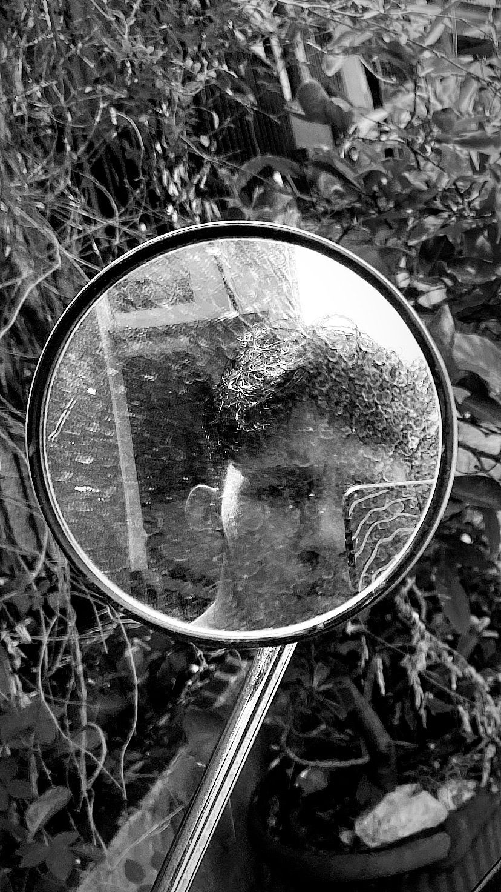
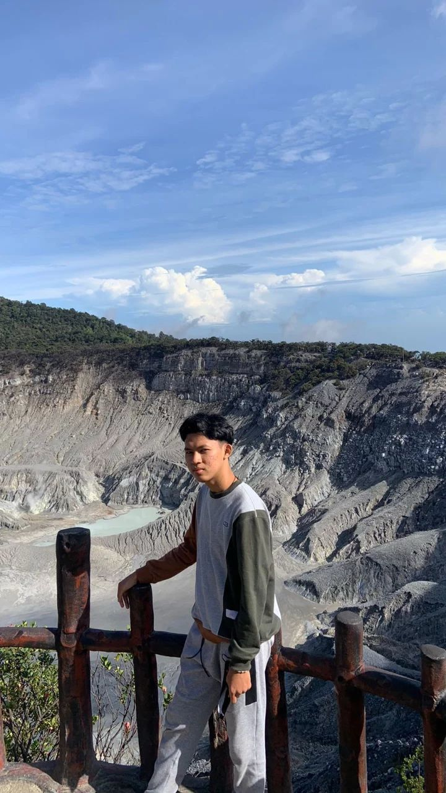

Where I've Gained Experience
"My passion is web Developer. I am continuously learning and growing
in the tech industry. Currently, I have experience working in a
startup environment and as a freelancer, building websites with modern
technologies."


Hi, I'm Zoy! A web developer passionate about learning and growing in the tech industry. I have experience working in a startup environment and enjoy building modern, functional, and visually appealing websites. Outside of coding, I have a strong interest in business and always look for new opportunities to grow. I'm also a football enthusiast who loves playing and watching matches. For me, technology, business, and sports share the same principles—strategy, perseverance, and the drive to keep improving.
More AboutWhere I've Gained Experience
I participated in the Independent Study program as a Fullstack Developer at PT Amanah Karya Indonesia for 6 months, where I worked on building web applications using modern technologies.
Read More
I worked as a freelance web developer, creating websites for
university students working on community service projects (KKN),
helping them showcase their
research and reports online.
I completed a 6-month internship as a Web Developer at PT Sinar Perempuan Indonesia, where I contributed to website development for company profile and gained hands-on experience in frontend technologies.
Read MoreProject and Words of Wisdom
"Keberhasilan bukanlah milik orang yang pintar. Keberhasilan adalah kepunyaan mereka yang senantiasa berusaha"
"Jika kau menungguku untuk menyerah, kau akan menungguku selamanya."
“Kau gagal tetapi masih bisa mampu bangkit kembali, karena itu menurutku arti dari kuat yang sebenarnya”
Copyright © 2025 by Zoy Ivanie Tanjung All Rights Reserved.